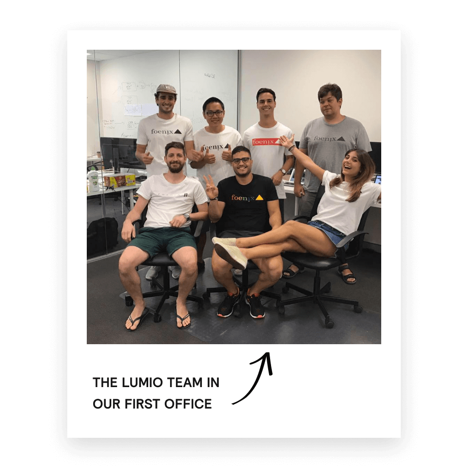

visit Relume Library
visit Relume LibraryAnimated Timeline
Made for the Webflow community
We use this timeline component to tell the Relume story, but we think it can be used to communicate a process, a product roadmap, a company’s history or a story.
The story of how we got started on Webflow
Relume was started by two guys with the same mission. Our story starts 8 years ago... Strap in.
January 2012
Co-founder Dan finishes the economics degree he promised his mum he’d complete, only to never use it and start his own clothing business (love you mum).
June 2016
Adam catches wind of Dan’s early success and slides into his DM offering help. Dan politely accepts.
SEE THE ARTICLE THAT GOT ADAM’S ATTENTION

August 2017
After collectively failing a number of business ventures, Dan and Adam finally have their first break. Together they build Lumio with a team of 7 other legends.
SLumio, previously called Foenix, was a social media analytics company that helped brands like Audi, David Jones and Red Balloon source legitimate influencers for social media campaigns

“We were essentially the Instagram police and called out fake influencers left, right and centre. It was fun and all, but there is only so many bikini chicks you can look at on Instagram before you start losing your mind.”
Dan, Co-founder and CEO of Lumio
April 2020
Adam catches wind of Dan’s early success and slides into his DM offering help. Dan politely accepts.
SEE THE ARTICLE THAT GOT ADAM’S ATTENTION